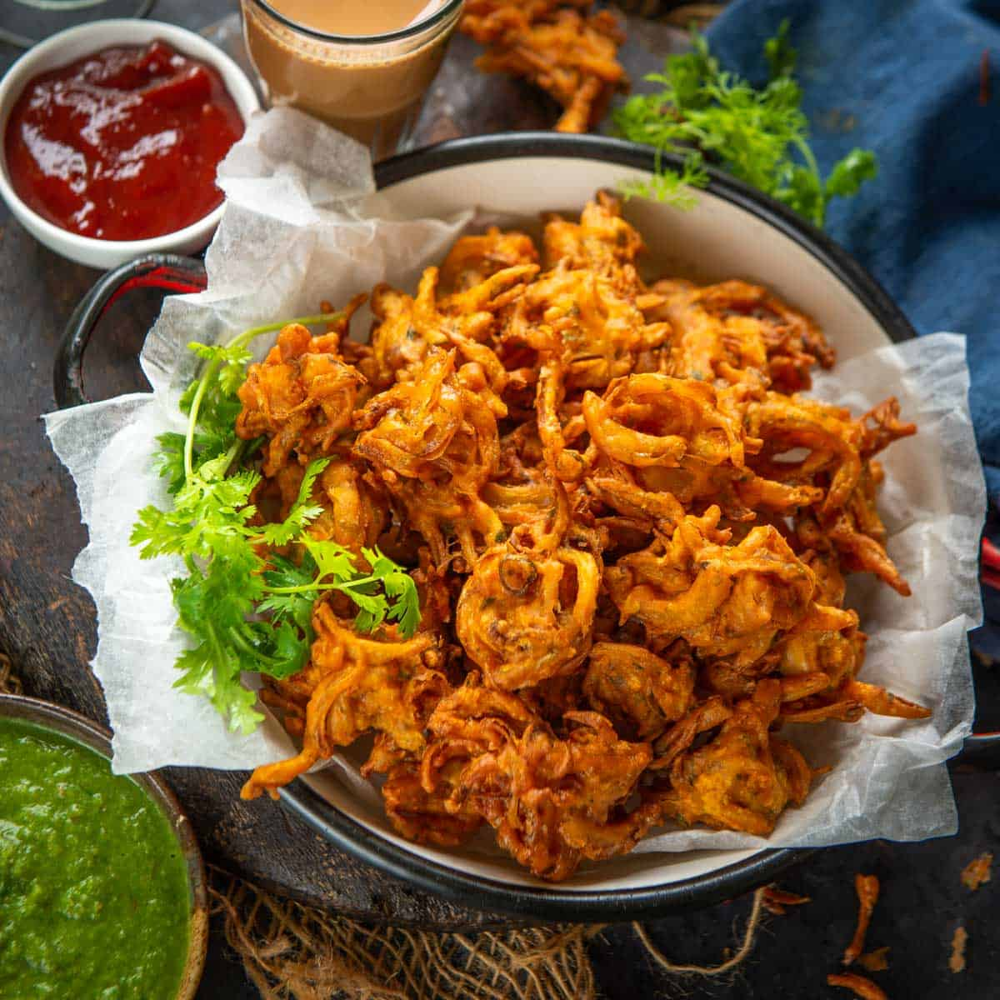

Pakoda

Description(What is a pakoda?)
Crispy Onion Pakoda is one of the favorite
Indian snacks during rain or winters.
Pakoda is a very popular North Indian snack served as a tea-time snack,
especially during the monsoons.
Crispy from the outside and soft from the inside,
these onion pakora are an all-time favorite in Indian homes.
Ingredients
- Onions
- Chickpea flour for batter
- Kashmiri red chilli powder
- Fresh coriander leaves
- Green chillies
- Fresh ginger
- Turmeric powder
- Chaat masala
- Salt
- Water
- Mustard oil
Steps to follow
- Add
2 cups of thinly sliced onions,
1 teaspoon salt,
1 teaspoon Kashmiri red chili powder,
2 teaspoon finely chopped ginger,
2 teaspoon finely chopped cilantro,
2 teaspoon finely chopped green chilies,
¼ teaspoon asafetida
to a large mixing bowl.
- Mash the ingredients using your fingers until they all come together.
Keep the bowl aside for 10 minutes.
- Now add 1 cup chickpea flour, 2 tablespoon rice flour,
and 2 tablespoon vegetable oil to the bowl and mix well.
- Add ⅛ teaspoon turmeric powder and 1-2 tablespoon of water and
mix well to make a thick pakoda batter.
The batter should feel like a sticky dough.
- Heat 3-4 cups of vegetable oil for frying in a pan over medium-high heat.
Once the oil is hot, reduce the heat to medium flame.
- Drop small pakoda in the hot oil using your fingers and
fry until they are golden brown and crisp.
Flip the pakoras using a slotted spoon a few times while
frying to ensure even browning.
- Drain on a plate lined with paper towels.
- Sprinkle chaat masala on top and serve immediately.
Back to home page